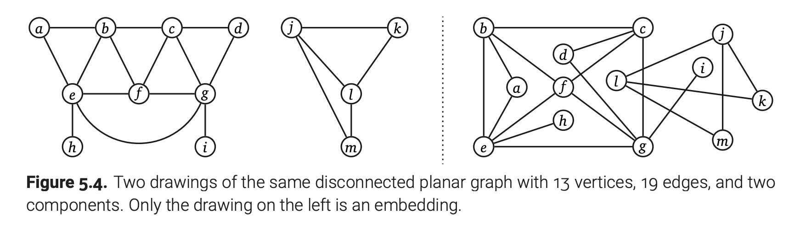
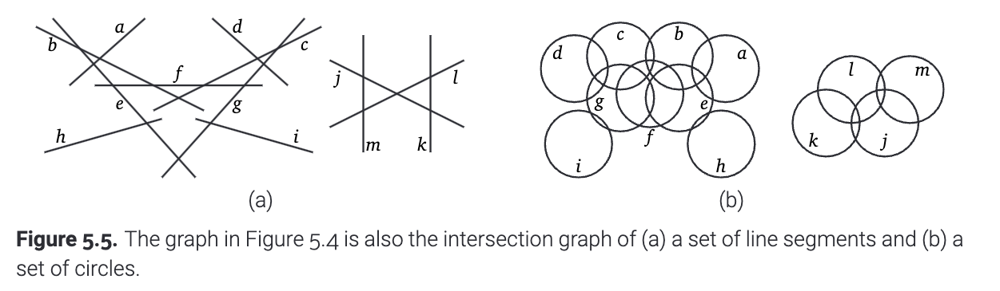
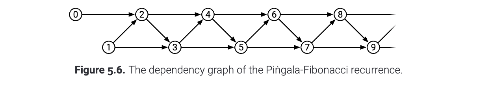

图的最常见的表示方法就是把它们画出来! 这样, 我们就把图上的节点在纸上用一个小圆圈(或者别的什么形状)表示出来, 图上的边就通过这两个小圆圈之间的连线(直线或者曲线)表示出来了. 如果我们发现我们可以做到让这些边不交叉, 我们就称这个图为平面图(planar map), 也叫做图的嵌入(embedding). 一个图可以有多种画法, 所以, 看到一个画在平面上面的图有边交叉的时候, 先不要忙着断定这是个非平面图!

(图5.4 同一张平面图的两个不同画法, 只有左边的画法叫做图的嵌入)
实际上, 图除了能被画下来, 还可以有更好玩的应用! 比如, 对于一些几何对象来讲, 几何对象集合的交集图(intersection graph) 对于每个对象都有一个节点，对于每个相交的对象对都有一条边. 不同类型的集合对象（线段、矩形、圆形等）可以对应不同类别的图形. 一种特别有用的交集图类型是区间图(interval graph). 区间图的顶点是实线上的区间, 任何两个重叠的区间之间, 都有一条边相连.

(图 5.5 图5.4实际上是(a)一堆线段(b)一堆圆圈的相交图)
图的另一个有趣的应用是递归算法的依赖图(dependency graph). 依赖图是有向无环图, 这个图的顶点是在执行算法时出现的所有不同的递归子问题; 如果求解子问题$A$, 就要先求解子问题$B$, 那么我们就从$B$向$A$连一条边. 比如, 对于Fibonacci数列而言, $$ F_n= \begin{cases}0 & \text { if } n=0 \\ 1 & \text { if } n=1 \\ F_{n-1}+F_{n-2} & \text { otherwise }\end{cases} $$
依赖图的顶点是整数$0,1,2,\cdots$; 边是$(i-1) \rightarrow i$ 和 $(i-2) \rightarrow i$ , 对于每一个 $i$ 在 2 到 $n$之间.

(图5.6 Fibonacci问题的递归依赖调用关系图)
对于一个更加复杂的例子, 回忆第三章介绍过的编辑距离问题, 它的递归关系如下:
$$ \operatorname{Edit}(i, j)= \begin{cases}i & \text{ if }j=0 \\ j & \text{ if } i=0\\ \min \left{\begin{array}{c} \operatorname{Edit}(i-1, j)+1 \\ \operatorname{Edit}(i, j-1)+1 \\ \operatorname{Edit}(i-1, j-1)+[A[i] \neq B[j]] \end{array}\right} & o.w. \end{cases} $$